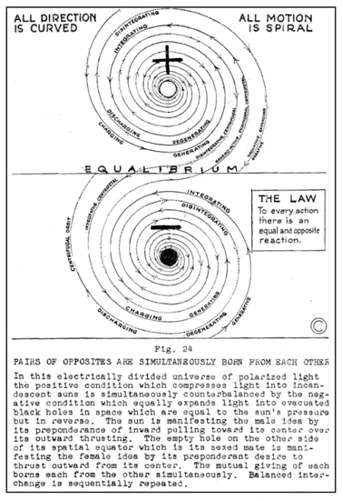

Part VIII (Lessons 29–32): Electric Polarity & Reincarnation¶

Lesson 29: The Spiritual Significance of Electric Polarity
We have progressed to a point where you can now comprehend why God divided His thinking into pairs of opposite electrical mates to make two polarized units of every creating thing, whether mineral, vegetable or animal. What was God’s purpose in creating your polarized body?
Lesson 30: Reincarnation
We now approach the most difficult of all subjects, the idea of reincarnation. Reincarnation is difficult to explain to people of this age because the concepts of this age in the unfolding of man are still too primitive for anyone to comprehend many facts of Nature which are beyond their limited range of sensing. That extremely limited range of sensing of this early stage of man’s unfolding is his great handicap to comprehension of this principle.

Lesson 31: The Supreme Mystery of the Ages (Reincarnation)
To rebuild new concepts of Nature’s workings is not easy for you, nor is it easy for me to explain it simply. For you it requires great concentration, followed by much decentration. For me it needs the power to make simple for you that which seems inconceivably complex to you. I assure you, however, that when you finally arrive at full knowing of the basic simplicity of God’s creative principle you will KNOW it in all of the simplicity in which I KNOW it. And it will transform YOU by its illumining as it transformed ME.
Lesson 32: Answers to Students’ Questions (Part VIII)
At long last we are now enabled to answer the heretofore unanswerable questions concerning life, death, and what happens after, both as to body and person. Many such questions have been in our files for a long time–not because they could not be answered, but because the answers could not be understood.